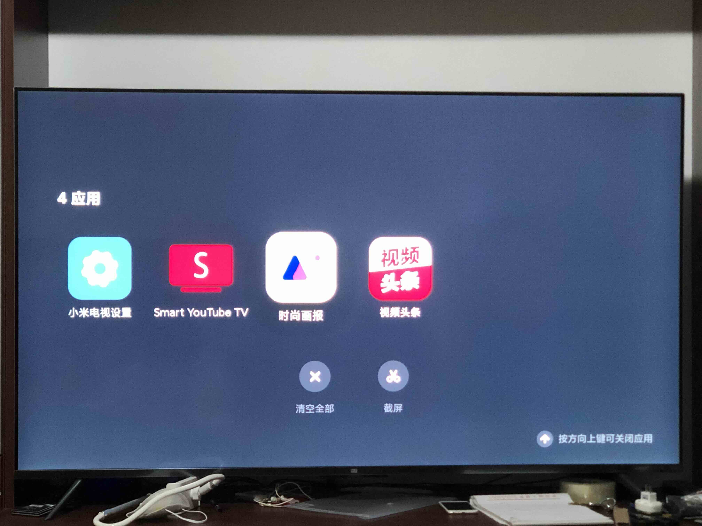

टीवी पर यूट्यूब कैसे देखें | AI द्वारा उत्पन्न और अनुवादित
यह गाइड मानता है कि आपके पास पहले से ही geo-restrictions को बायपास करने का तरीका मौजूद है। यहाँ बताया गया है कि बिना राउटर पर कस्टम फर्मवेयर फ्लैश किए अपने टीवी पर YouTube कैसे देखें—बस एक ऐप का उपयोग करें।
SmartYouTubeTV

-
डाउनलोड और इंस्टॉल करें: ऐप डाउनलोड करें और USB ड्राइव का उपयोग करके इसे अपने टीवी पर साइडलोड करें।
- प्रॉक्सी कॉन्फ़िगर करें:
- अपने प्रॉक्सी क्लाइंट (जैसे Clash) पर, “Allow connections from LAN” को Enable करें ताकि लोकल नेटवर्क डिवाइस आपके मशीन के माध्यम से ट्रैफ़िक रूट कर सकें।
- SmartYouTubeTV में, सेटिंग्स पर जाएं और अपने प्रॉक्सी विवरण दर्ज करें (जैसे
192.168.1.3:7890)। नोट: SOCKS5 का उपयोग करें (HTTP प्रॉक्सी टेस्टिंग में फेल हुई)।192.168.1.3को अपने मशीन के लोकल IP से रिप्लेस करें।
- टेस्ट और कन्फर्म करें: ऐप में “Test” पर क्लिक करें ताकि कनेक्टिविटी वेरिफाई हो सके। यदि सफल होता है, तो सेटिंग्स सेव करें और स्ट्रीमिंग शुरू करें।

gfreezy/seeker (Transparent Proxy)
एक GitHub प्रोजेक्ट जो आपके कंप्यूटर को TUN (Surge के enhanced/gateway मोड्स की तरह) का उपयोग करके एक प्रॉक्सी गेटवे में बदल देता है। नीचे कुछ महत्वपूर्ण नोट्स और एक वर्किंग कॉन्फ़िगरेशन दी गई है:
कॉन्फ़िगरेशन (config.yml)
verbose: true
dns_start_ip: 10.0.0.10
dns_servers:
- 223.5.5.5:53
- 114.114.114.114:53
dns_timeout: 1s
tun_name: utun4
tun_ip: 10.0.0.1
tun_cidr: 10.0.0.0/16
dns_listen: 0.0.0.0:53
gateway_mode: true
ping_timeout: 2s
probe_timeout: 30ms
connect_timeout: 1s
read_timeout: 30s
write_timeout: 5s
max_connect_errors: 2
servers:
- name: http proxy server
addr: 0.0.0.0:7890
protocol: Http
- name: https proxy server
addr: 0.0.0.0:7890
protocol: Https
rules:
- 'MATCH,PROXY'
SOCKS5 क्यों नहीं?
शुरुआत में, मैंने SOCKS5 का उपयोग करने की कोशिश की:
servers:
- name: socks5 proxy server
addr: 0.0.0.0:7891
protocol: Socks5
लेकिन इससे connection loops हो गए (docs के अनुसार), जिसके लिए डोमेन के लिए स्पष्ट direct-connection नियमों की आवश्यकता थी। HTTP/HTTPS प्रॉक्सी अधिक स्थिर रहे।
ट्रेड-ऑफ़
- Seeker: एक समर्पित मशीन की आवश्यकता होती है जो राउटर की तरह काम करे।
- प्रॉक्सी मोड (SmartYouTubeTV): लचीला—फोन/टैबलेट के साथ प्रॉक्सी पोर्ट शेयर करके काम करता है।

टीवी स्क्रीनशॉट (Xiaomi TV)
स्क्रीनशॉट लेने के लिए:
- रिमोट पर
Homeबटन को डबल-प्रेस करें ताकि ऐप मैनेजर खुले। - स्क्रीनशॉट बटन का चयन करें और WeChat (या अन्य ऐप्स) के माध्यम से शेयर करें।
- इस मेनू का उपयोग करके फ्रीज़ हुए ऐप्स को फ़ोर्स-क्लोज करें।

बड़े स्क्रीन के अनुभव का आनंद लें!
अपडेट (सितंबर 2025)
Apple TV अब नेटिव रूप से VPN सॉफ़्टवेयर सपोर्ट करता है। आप Shadowrocket इंस्टॉल कर सकते हैं, अपने प्रॉक्सी सर्वर से कनेक्ट कर सकते हैं और सीधे YouTube TV स्ट्रीम कर सकते हैं।